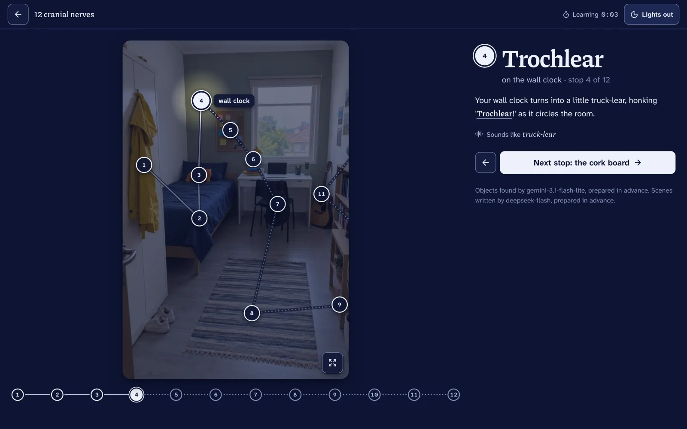
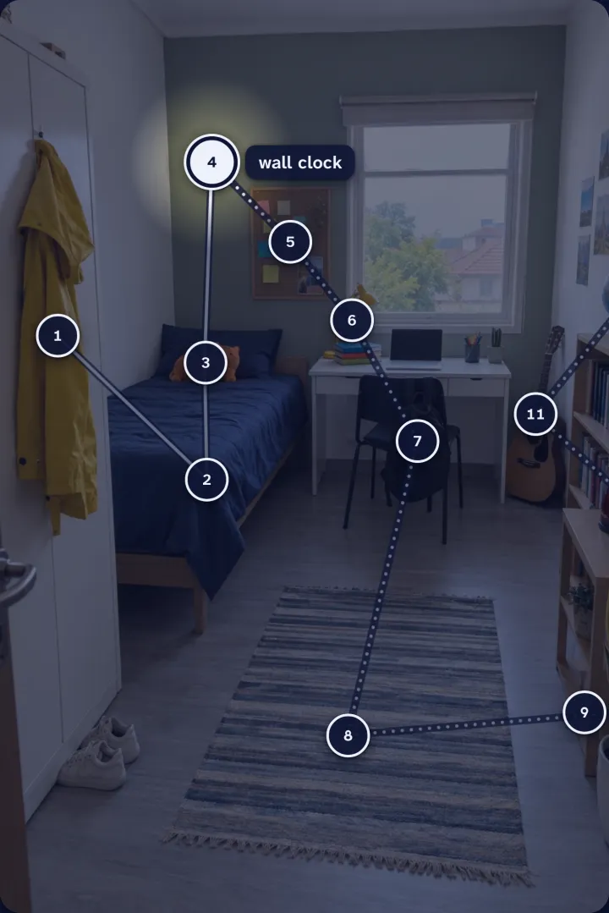
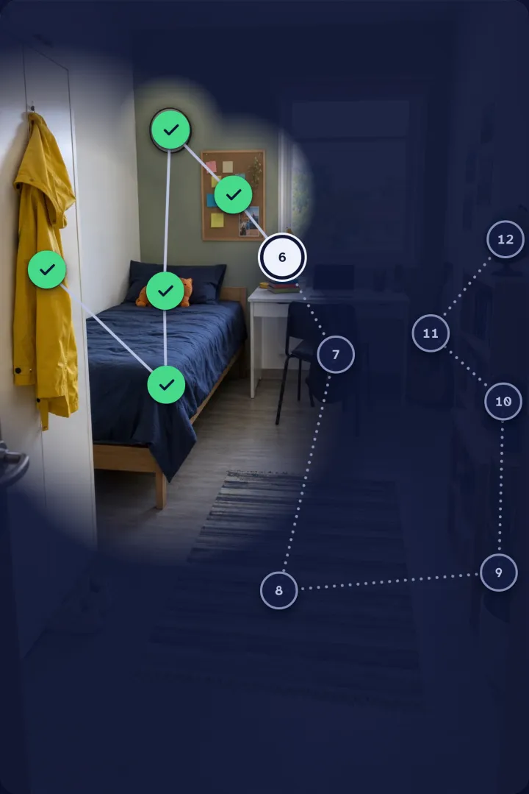
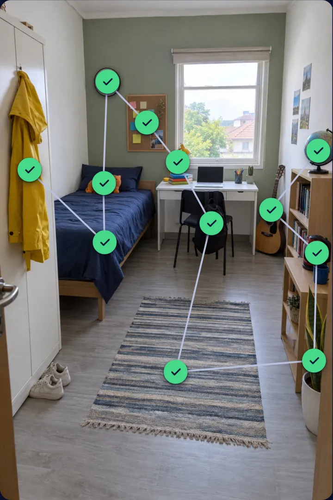

Loci
Say your list in the dark. Your room lights up.
A memory palace from one photo of your own room.
v0.1.0loci.edycu.dev
Stop 5: Trigeminal. Right.
Every item you remember turns a light back on.
- 1yellow raincoat
- 2blue bed
- 3orange cat plush
- 4wall clock
- 5cork board
- 6yellow desk lamp
- 7black backpack
- 8striped rug
- 9snake plant
- 10red kettle
- 11acoustic guitar
- 12globe
The problem
Lists in order are hard.
A memory palace works, but building one by hand takes a long time.
Oh Oh Oh To Touch And Feel…
First-letter sentences hold the letters, not the words. devpost/scope.md
Loci
Your room becomes the palace.
AI finds real objects in one photo. Code lays one route through up to 12, with a strange scene for each stop.

How it works
The AI proposes. Code decides.
The real app
One flow, start to finish.

1Learna scene per stop 
2Lights outsay or type each item 
3Every light onthe whole room comes back
Stop 5: Trigeminal. Right.
Lights out
You say the item in the dark; its dim stop turns green and that part of your room lights up.
The real example palace's stops, route and pools.
Who decides
Code checks every answer.
Real outputs of shared/score.ts. Never an AI.
occulomotor
→ Oculomotortrochlaer
→ Trochlearauditory
→ VestibulocochlearVitamin D
→ Vitamin Csaid
truck lear
→ Trochlear
Proof
Built, tested, written down.
- Scope, PRD, specapproved plan
devpost/ - Release v0.1.0MIT license
LICENSE - No user numbersone sitting is what it shows
Try it
Try it in one tap.
- Open loci.edycu.dev
- Tap Try it: 12 cranial nerves
- Walk the room, then lights out
Your room is the memory palace.
loci.edycu.dev